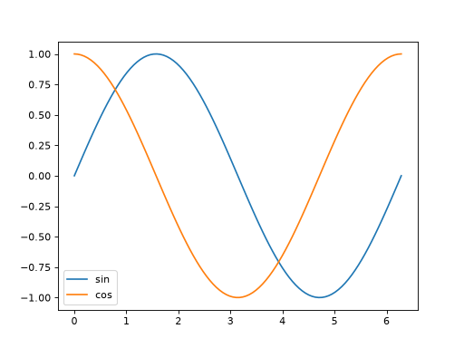
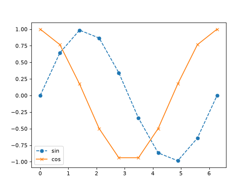
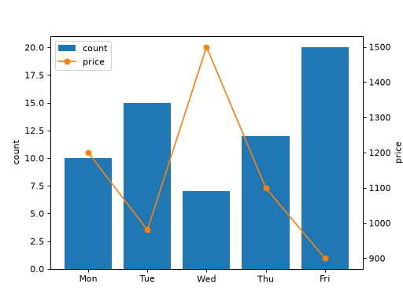

複数系列のプロット
同じ Axes に対して plot() を複数回呼び出すことで、複数の系列を重ねて描画できます。
import matplotlib.pyplot as plt
import numpy as np
from matplotlib.axes import Axes
from matplotlib.figure import Figure
x: np.ndarray = np.linspace(0, 2 * np.pi, 100)
fig: Figure
ax: Axes
fig, ax = plt.subplots()
ax.plot(x, np.sin(x), label="sin")
ax.plot(x, np.cos(x), label="cos")
ax.legend()



色・線種・マーカーの指定
color（色）、linestyle（線種）、marker（マーカー）を指定すると、系列ごとに見た目を変えることができます。
import matplotlib.pyplot as plt
import numpy as np
from matplotlib.axes import Axes
from matplotlib.figure import Figure
x: np.ndarray = np.linspace(0, 2 * np.pi, 10)
fig: Figure
ax: Axes
fig, ax = plt.subplots()
ax.plot(
x, np.sin(x), color="tab:blue", linestyle="--", marker="o", label="sin"
)
ax.plot(
x, np.cos(x), color="tab:orange", linestyle="-", marker="x", label="cos"
)
ax.legend()



color には、主に次の 3 種類の書式を指定できます。
色名:
"red"、"blue"のような英語の色名matplotlib の配色:
"tab:blue"、"tab:orange"のようにtab:から始まるもの。複数の系列を描画したときに自動的に割り当てられる既定の配色（Tableau 配色）で、複数系列を見分けやすい配色になっています16 進数カラーコード:
"#1f77b4"のような Web ページなどでもおなじみの指定方法
主な指定値の例です。
linestyle:"-"（実線）、"--"（破線）、":"（点線）、"-."（一点鎖線）marker:"o"（丸）、"x"（バツ）、"s"（四角）、"^"（三角）
短縮形として、ax.plot(x, y, "o--") のように色・マーカー・線種を 1 つの文字列でまとめて指定することもできます。
異なる軸を重ねる（twinx）
単位やスケールが大きく異なる 2 つの系列（例: 件数と価格）を同じ Axes に重ねると、一方のグラフがつぶれて見えにくくなることがあります。このような場合は twinx() を使い、x 軸を共有しつつ y 軸だけ異なる Axes をもう 1 つ用意します。
import matplotlib.pyplot as plt
from matplotlib.axes import Axes
from matplotlib.figure import Figure
categories: list[str] = ["Mon", "Tue", "Wed", "Thu", "Fri"]
counts: list[int] = [10, 15, 7, 12, 20]
prices: list[int] = [1200, 980, 1500, 1100, 900]
fig: Figure
ax1: Axes
fig, ax1 = plt.subplots()
ax1.bar(categories, counts, color="tab:blue", label="count")
ax1.set_ylabel("count")
ax2: Axes = ax1.twinx()
ax2.plot(categories, prices, color="tab:orange", marker="o", label="price")
ax2.set_ylabel("price")
handles1, labels1 = ax1.get_legend_handles_labels()
handles2, labels2 = ax2.get_legend_handles_labels()
ax1.legend(handles1 + handles2, labels1 + labels2, loc="upper left")



ax1.twinx() は、ax1 と x 軸を共有し、独立した y 軸（右側に表示）を持つ新しい Axes を返します。左の y 軸は ax1、右の y 軸は ax2 の set_ylabel() でそれぞれ設定します。
注釈
凡例（legend()）は Axes ごとに別々に管理されるため、ax1.legend() と ax2.legend() を単純にそれぞれ呼び出すと、2 つの凡例が重なって表示されてしまいます。上の例のように get_legend_handles_labels() で両方の Axes から凡例情報を集めて、1 つの legend() にまとめて渡すと、1 つの凡例として表示できます。